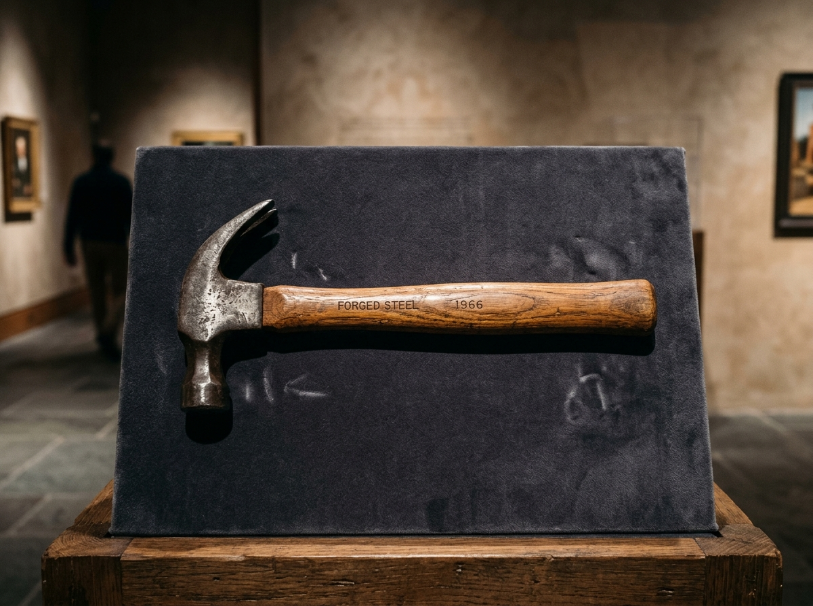

Forged Claw Hammer
The Garage Room • Catalog No. G-05

Forged Claw Hammer. Acquired 1966. Balanced in seasoned hickory and carbon steel, it drives nails with measured percussion. Its curved claw extracts misjudgments through quiet leverage.
Curator's Note • Fun Fact
Roman craftsmen fashioned iron claw heads centuries ago.